Пароочиститель Bissell Steam Shot 16Q1-J
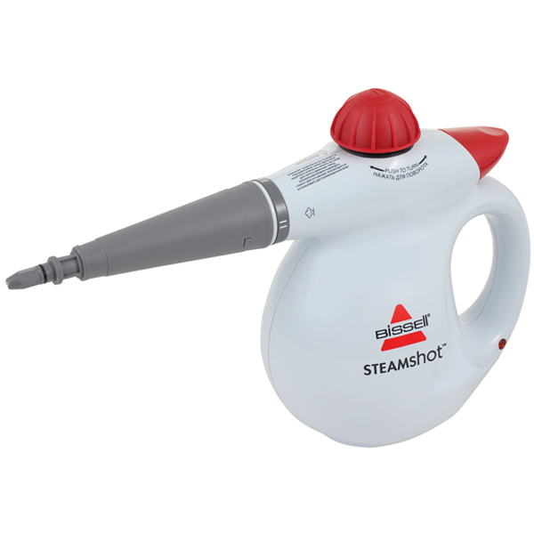Воспользуйтесь пароочистителем Steam Shot, чтобы размягчить и удалить стойкие пятна, глубоко въевшуюся грязь, остатки засохшей пищи и другие бытовые загрязнения с различных поверхностей своего дома: на кухне, в ванной и других помещениях.
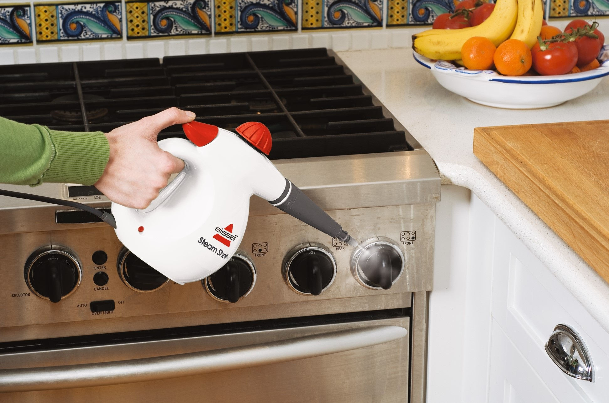Чистит и дезинфицирует все твердые поверхности на кухне и в ванной: кафель, плитка, сантехника, ванные, раковины, плиты, бытовые приборы.
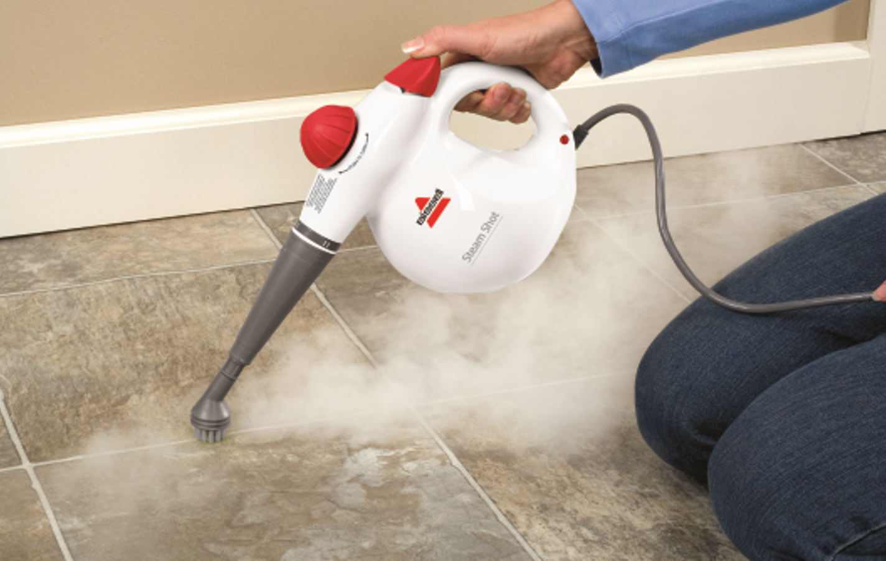Ручной пароочиститель BISSELL Steam Shot позволяет производить чистку абсолютно без химикатов, с использованием только водопроводной воды, превращаемой в мощный поток пара и уничтожающей бактерии во всех уголках Вашего дома.
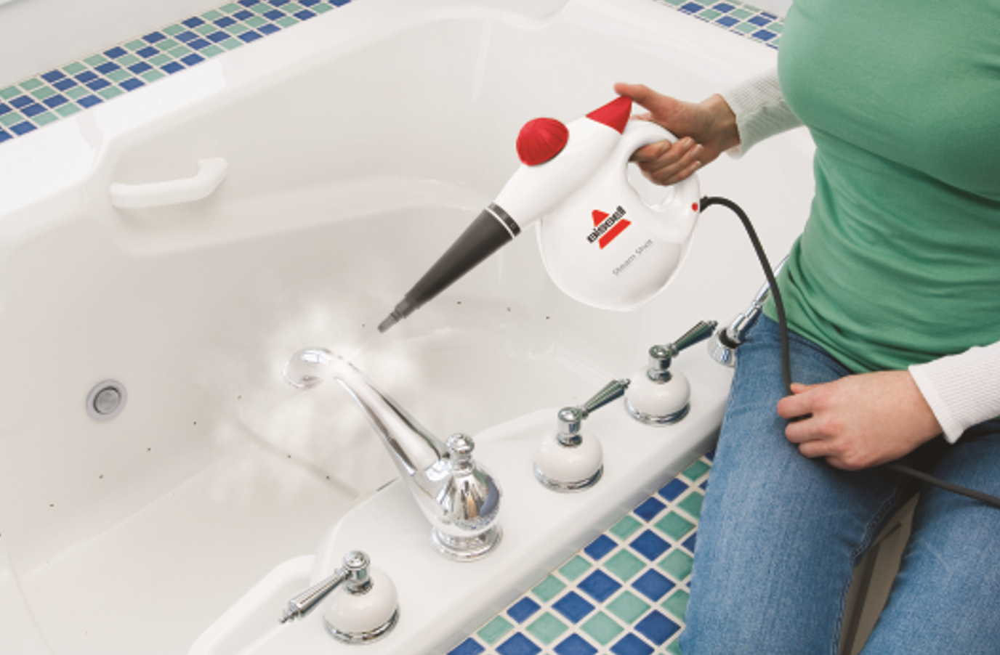Высокоэффективный пароочиститель мощностью 1000 Вт, создающий давление 4,5 бар и оснащенный курковой кнопкой подачи пара по необходимости, позволяет проводить очистку паром там, где это требуется.
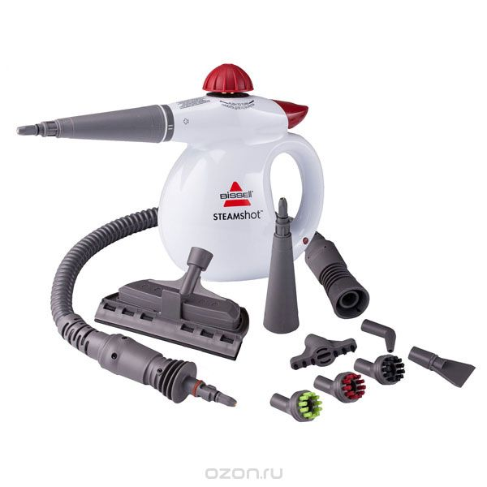Комплект включает множество насадок различного назначения:
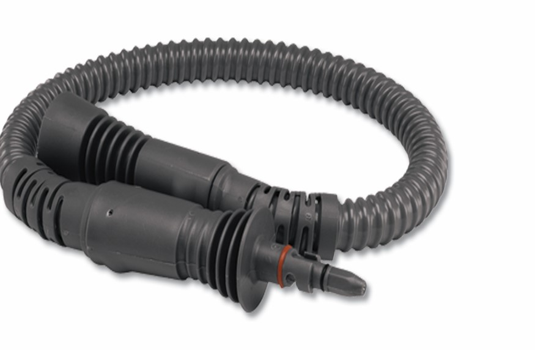Гибкий шланг-удлинитель для чистки труднодоступных мест

3 разноцветные круглые щетки для оттирания трудноудаляемой грязи. Имеют цветовой код: вы сами сможете определить какую насадку использовать для кухни, ванной или сантехники.
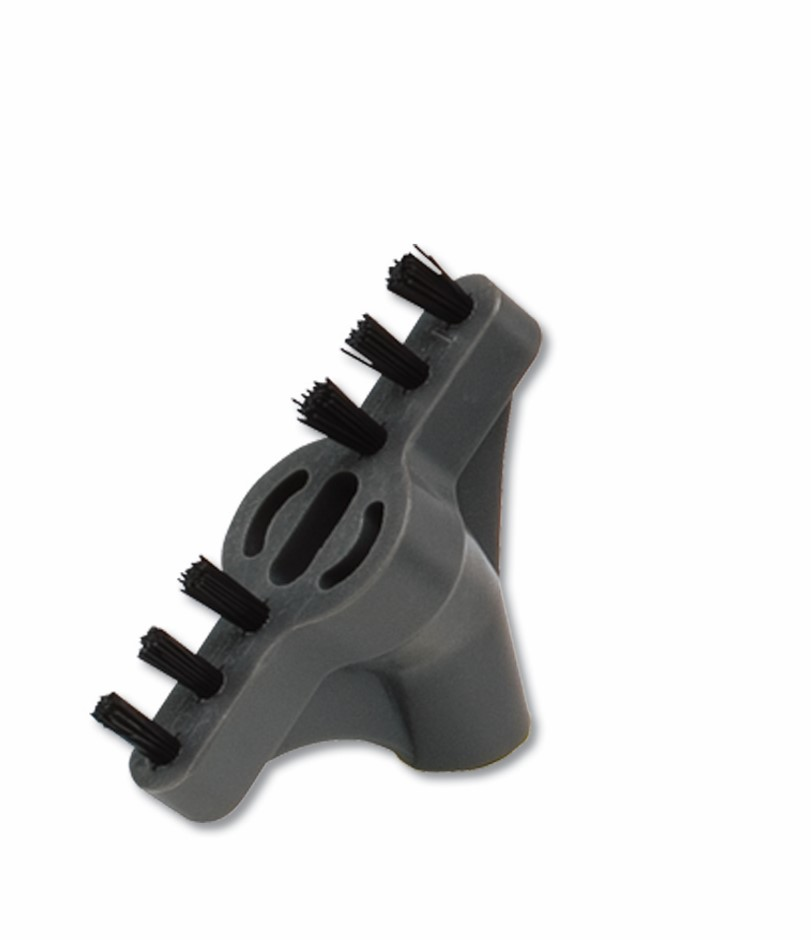Насадка для чистки швов между плиткой, а также для чистки в небольших трещинах и полостях
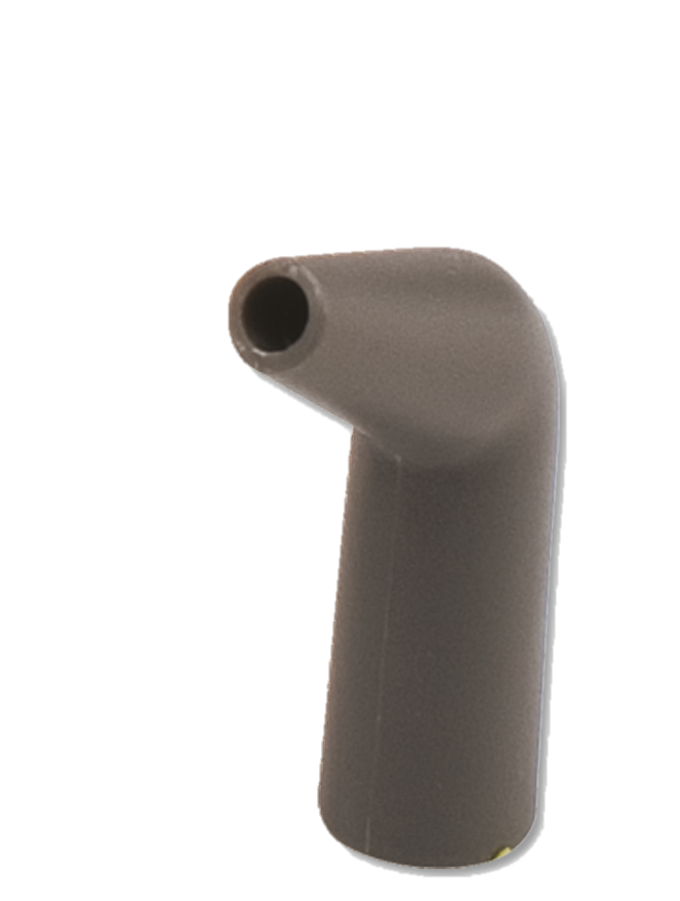Насадка для чистки в углах и труднодоступных местах

Насадка для отпаривания одежды с накладкой из микрофибры для освежения и удаления складок на одежде, шторах и драпировке
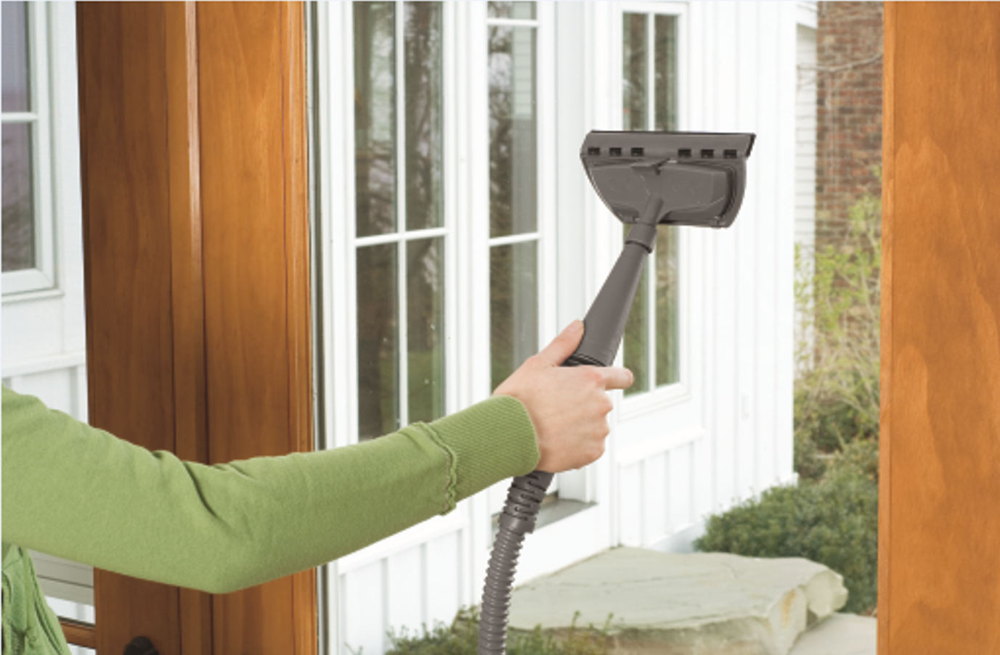Насадка для чистки стекол, окон, зеркал
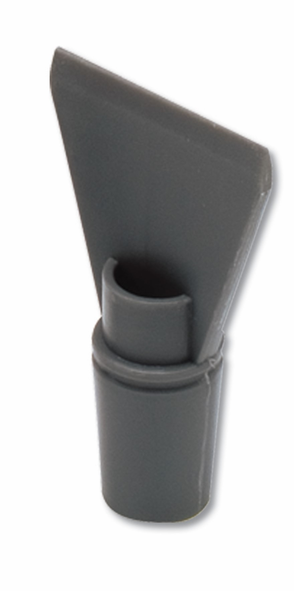Насадка-скребок для чистки особо сложных загрязнений, для удаления обоев, остатков жевательной резинки и особенно липкой грязи.
Световой индикатор сообщает о готовности прибора к работе.
Легкий вес – 2.3 кг – позволяет Вам не уставать во время уборки.
Технические характеристики:
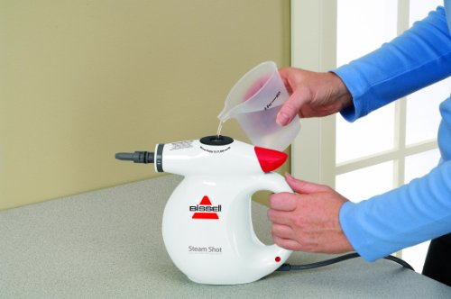
Мощность до 1100 Вт
Время подготовки к работе 60 сек
Время непрерывной работы 10 мин
Вместимость 0.36 л
Давление 4.5 бар
Насадки в комплекте – 9
Вес 2.3 кг
Длина шнура 4.8 м
Кнопка подачи пара